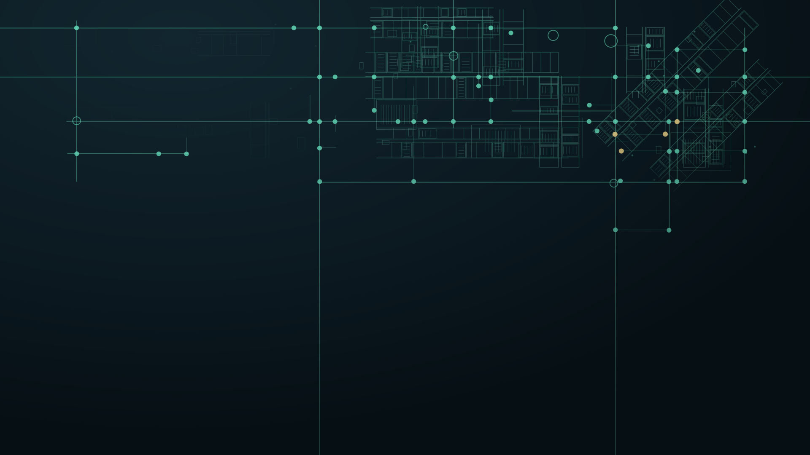
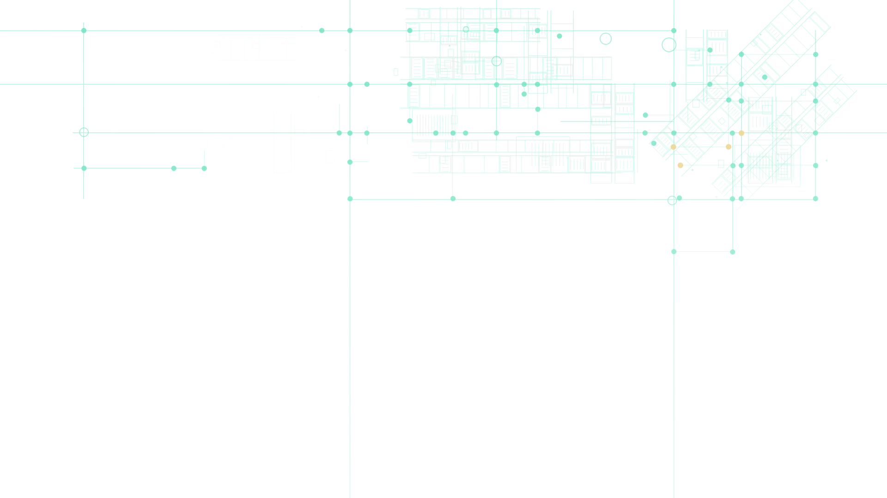

1 · Original vs rebuild
Same size, same canvas. The original carries the baked-in wordmark; the rebuild does not.
Original — 1024x576 JPEG, logo baked in

Rebuild — luci-e-mesh.solid.svg, vector

Phase 1 · canonical master
The motif is now vector. Composition, node positions, the four gold nodes, and the hollow rings were measured off the original raster and reproduced; the ghosted floorplan is generated from a fixed seed rather than traced. Two deliberate changes: the master is logo-free, and the grid lines run continuous (the original knocked them out behind the wordmark, which would read as broken lines with no logo there).
Same size, same canvas. The original carries the baked-in wordmark; the rebuild does not.
Original — 1024x576 JPEG, logo baked in
Rebuild — luci-e-mesh.solid.svg, vector

The same upper-right region of each, enlarged to about 3x. This is the problem the rebuild solves: the raster softens and shows JPEG blocking in the dark, the vector stays sharp at any size.
Original at 3x
Rebuild at 3x
The transparent master composited over --navy-deep, cropped to the right and
top, with a left-aligned lockup sitting in the clear lower-left. No blend mode needed:
the master has no canvas of its own, so the section tone shows through.
Next step
See LUCI on your floor.
Sample CTA band — copy sits in the motif's empty lower-left, exactly where the composition leaves room.
luci-e-mesh.svg — transparent, for web

Shown over --navy to prove it carries no canvas of its own.
luci-e-mesh.solid.svg — navy + vignette, for Teams/wallpaper/LinkedIn
Replaces the raster in the internal-team renders.
scripts/gen-e-mesh.mjs emits both masters. Geometry tables are in the original's 1024x576 space and scale to the 1920x1080 artboard, so they stay readable against the measurements.#68E3BE, #EDD086), written literally rather than as CSS variables — custom properties do not inherit into an SVG referenced by <img> or background-image.